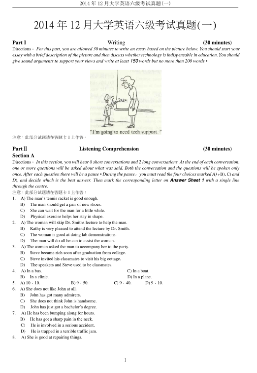
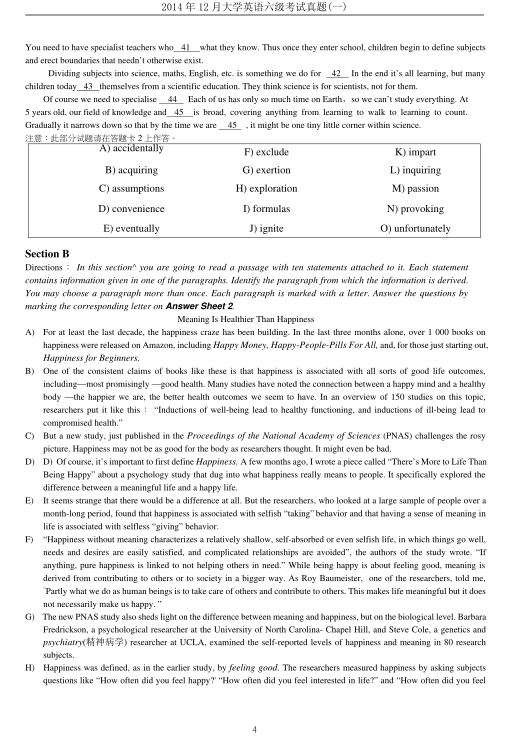

第 1 / 8 页

2014 年12 月大学英语六级考试真题(一)
1
2014 年12 月大学英语六级考试真题(一)
Part I
Writing
(30 minutes)
Directions：For this part, you are allowed 30 minutes to write an essay based on the picture below. You should start your
essay with a brief description of the picture and then discuss whether technology is indispensable in education. You should
give sound arguments to support your views and write at least 150 words but no more than 200 words •
注意：此部分试题请在答题卡1 上作答。
PartⅡ
Listening Comprehension
(30 minutes)
Section A
Directions：In this section, you will hear 8 short conversations and 2 long conversations. At the end of each conversation,
one or more questions will be asked about what was said. Both the conversation and the questions will be spoken only
once. After each question there will be a pause • During the pause，you must read the four choices marked A) 9 B), C) and
D), and decide which is the best answer. Then mark the corresponding letter on Answer Sheet 1 with a single line
through the centre.
注意：此部分试题请在答题卡1 上作答：
1.
A) The man’s tennis racket is good enough.
B)
The man should get a pair of new shoes.
C)
She can wait for the man for a little while.
D)
Physical exercise helps her stay in shape.
2.
A) The woman will skip Dr. Smiths lecture to help the man.
B)
Kathy is very pleased to attend the lecture by Dr. Smith.
C)
The woman is good at doing lab demonstrations.
D)
The man will do all he can to assist the woman.
3.
A) The woman asked the man to accompany her to the party.
B)
Steve became rich soon after graduation from college.
C)
Steve invited his classmates to visit his big cottage.
D)
The speakers and Steve used to be classmates.
4.
A) In a bus.
C) In a boat.
B)
In a clinic.
D) In a plane.
5.
A) 10：10.
B) 9：50.
C) 9：40.
D) 9：10.
6.
A) She does not like John at all.
B)
John has got many admirers.
C)
She does not think John is handsome.
D)
John has just got a bachelor’s degree.
7.
A) He has been bumping along for hours.
B)
He has got a sharp pain in the neck.
C)
He is involved in a serious accident.
D)
He is trapped in a terrible traffic jam.
8.
A) She is good at repairing things.
查看 / 复制本页文字
2014 年12 月大学英语六级考试真题(一) 1 2014 年12 月大学英语六级考试真题(一) Part I Writing (30 minutes) Directions：For this part, you are allowed 30 minutes to write an essay based on the picture below. You should start your essay with a brief description of the picture and then discuss whether technology is indispensable in education. You should give sound arguments to support your views and write at least 150 words but no more than 200 words • 注意：此部分试题请在答题卡1 上作答。 PartⅡ Listening Comprehension (30 minutes) Section A Directions：In this section, you will hear 8 short conversations and 2 long conversations. At the end of each conversation, one or more questions will be asked about what was said. Both the conversation and the questions will be spoken only once. After each question there will be a pause • During the pause，you must read the four choices marked A) 9 B), C) and D), and decide which is the best answer. Then mark the corresponding letter on Answer Sheet 1 with a single line through the centre. 注意：此部分试题请在答题卡1 上作答： 1. A) The man’s tennis racket is good enough. B) The man should get a pair of new shoes. C) She can wait for the man for a little while. D) Physical exercise helps her stay in shape. 2. A) The woman will skip Dr. Smiths lecture to help the man. B) Kathy is very pleased to attend the lecture by Dr. Smith. C) The woman is good at doing lab demonstrations. D) The man will do all he can to assist the woman. 3. A) The woman asked the man to accompany her to the party. B) Steve became rich soon after graduation from college. C) Steve invited his classmates to visit his big cottage. D) The speakers and Steve used to be classmates. 4. A) In a bus. C) In a boat. B) In a clinic. D) In a plane. 5. A) 10：10. B) 9：50. C) 9：40. D) 9：10. 6. A) She does not like John at all. B) John has got many admirers. C) She does not think John is handsome. D) John has just got a bachelor’s degree. 7. A) He has been bumping along for hours. B) He has got a sharp pain in the neck. C) He is involved in a serious accident. D) He is trapped in a terrible traffic jam. 8. A) She is good at repairing things.
第 2 / 8 页
2014 年12 月大学英语六级考试真题(一)
2
B)
She is a professional mechanic.
C)
She should improve her physical condition.
D)
She cannot go without a washing machine.
Questions 9 to 11 are based on the conversation you have just heard.
9.
A) Some witnesses failed to appear in court.
B)
The case caused debate among the public.
C)
The accused was found guilty of stealing.
D)
The accused refused to plead guilty in court.
10. A) He was out of his mind.
C) His wife deserted him.
B) He was unemployed.
D) His children were sick.
11. A) He had been in jail before.
C) He was unlikely to get employed.
B) He was unworthy of sympathy.
D) He had committed the same sort of crime.
Questions 12 to 15 are based on the conversation you have just heard.
12. A) Irresponsible.
C) Aggressive
B) Unsatisfactory.
D) Conservative.
13.
A) Internal communication.
C) Public relations.
B)
Distribution of brochures.
D) Product design
14.
A) Placing advertisements in the trade press.
C) Advertising in the national press.
B) Drawing sketches for advertisements.
D) Making television commercials.
15.
A) She has the motivation to do the job.
C) She is not so easy to get along with.
B)
She knows the tricks of advertising.
D) She is not suitable for the position.
Section B
Directions ：In this section, you will hear 3 short passages. At the end of each passage, you will hear some questions. Both
the passage and the questions will be spoken only once. After you hear a question, you must choose the best answer from
the four choices marked A)，B)，C) and D). Then mark the corresponding letter on Answer Sheet 1 with a single line
through the centre.
注意：此部分试题请在答题卡1 上作答。
Passage One
Questions 16 to 19 are based on the passage you have just heard.
16.
A) The cozy communal life.
C) Innovative academic programs.
B)
The cultural diversity.
D) Impressive school buildings.
17.
A)
It is very beneficial to their academic progress.
B)
It helps them soak up the surrounding culture.
C)
It is as important as their learning experience.
D)
It ensures their physical and mental health.
18.
A)
It offers the most challenging academic programs.
B)
It has the world5s best-known military academies.
C)
It provides numerous options for students.
D)
It draws faculty from all around the world.
19.
A)
They try to give students opportunities for experimentation.
B)
They are responsible merely to their Ministry of Education.
C)
They strive to develop every student’s academic potential.
D)
They ensure that all students get roughly equal attention.
Passage Two
Questions 20 to 22 are based on the passage you have just heard.
20.
A)
It will arrive at Boulogne at half past two.
B)
It crosses the English Channel twice a day.
C)
It is now about half way to the French coast.
D)
It is leaving Folkestone in about five minutes.
21. A) Opposite the ship’s office.
C) At the rear of B deck.
B)
Next to the duty-free shop.
D) In the front of A deck.
22、A) It is for the sole use of passengers travelling with cars.
查看 / 复制本页文字
2014 年12 月大学英语六级考试真题(一) 2 B) She is a professional mechanic. C) She should improve her physical condition. D) She cannot go without a washing machine. Questions 9 to 11 are based on the conversation you have just heard. 9. A) Some witnesses failed to appear in court. B) The case caused debate among the public. C) The accused was found guilty of stealing. D) The accused refused to plead guilty in court. 10. A) He was out of his mind. C) His wife deserted him. B) He was unemployed. D) His children were sick. 11. A) He had been in jail before. C) He was unlikely to get employed. B) He was unworthy of sympathy. D) He had committed the same sort of crime. Questions 12 to 15 are based on the conversation you have just heard. 12. A) Irresponsible. C) Aggressive B) Unsatisfactory. D) Conservative. 13. A) Internal communication. C) Public relations. B) Distribution of brochures. D) Product design 14. A) Placing advertisements in the trade press. C) Advertising in the national press. B) Drawing sketches for advertisements. D) Making television commercials. 15. A) She has the motivation to do the job. C) She is not so easy to get along with. B) She knows the tricks of advertising. D) She is not suitable for the position. Section B Directions ：In this section, you will hear 3 short passages. At the end of each passage, you will hear some questions. Both the passage and the questions will be spoken only once. After you hear a question, you must choose the best answer from the four choices marked A)，B)，C) and D). Then mark the corresponding letter on Answer Sheet 1 with a single line through the centre. 注意：此部分试题请在答题卡1 上作答。 Passage One Questions 16 to 19 are based on the passage you have just heard. 16. A) The cozy communal life. C) Innovative academic programs. B) The cultural diversity. D) Impressive school buildings. 17. A) It is very beneficial to their academic progress. B) It helps them soak up the surrounding culture. C) It is as important as their learning experience. D) It ensures their physical and mental health. 18. A) It offers the most challenging academic programs. B) It has the world5s best-known military academies. C) It provides numerous options for students. D) It draws faculty from all around the world. 19. A) They try to give students opportunities for experimentation. B) They are responsible merely to their Ministry of Education. C) They strive to develop every student’s academic potential. D) They ensure that all students get roughly equal attention. Passage Two Questions 20 to 22 are based on the passage you have just heard. 20. A) It will arrive at Boulogne at half past two. B) It crosses the English Channel twice a day. C) It is now about half way to the French coast. D) It is leaving Folkestone in about five minutes. 21. A) Opposite the ship’s office. C) At the rear of B deck. B) Next to the duty-free shop. D) In the front of A deck. 22、A) It is for the sole use of passengers travelling with cars.
第 3 / 8 页
2014 年12 月大学英语六级考试真题(一)
3
B)
It is much more spacious than the lounge on C deck.
C)
It is for the use of passengers travelling with children.
D)
It is for senior passengers and people with VIP cards.
Passage Three
Questions 23 to 25 are based on the passage you have just heard.
23、A) It was named after its location.
B)
It was named after its discoverer.
C)
It was named after a cave art expert.
D)
It was named after one of its painters.
24、A) Animal painting was part of the spiritual life of the time.
B)
Deer were worshiped by the ancient Cro-Magnon people.
C)
Cro-Magnon people painted animals they hunted and ate.
D)
They were believed to keep evils away from cave dwellers.
25、A) They know little about why the paintings were created.
B)
They have difficulty telling when the paintings were done.
C)
They are unable to draw such interesting and fine paintings.
D)
They have misinterpreted the meaning of the cave paintings.
Section C
Directions：In this section, you will hear a passage three times. When the passage is read for the first time 9 you should
listen carefully for its general idea. When the passage is read for the second time，you are required to fill in the blanks
with the exact words you have just heard. Finally, when the passage is read for the third time ? you should check what you
have written.
注意：此部分试题请在答题卡1 上作答。
If you are attending a local college, especially one without residence halls, youll probably live at home and commute to
classes. This arrangement has a lot of
26
It’s cheaper. It provides a comfortable and familiar setting, and it means youll get
the kind of home cooking you’re used to instead of the monotony（单调）that
27
even the best institutional food.
However，commuting students need to
28
to become involved in the life of their college and to take special steps to
meet their fellow students. Often, this means a certain amount of initiative on your part in
29
and talking to people in your
classes whom you think you might like.
One problem that commuting students sometimes face is their parents
‘ unwillingness to recognize that they’re adults. The
30
from high school to college is a big one, and if you live at home you need to develop the same kind of independence you’d
have if you were living away. Home rules that might have been
31
when you were in high school don't apply. If your parents
are
32
to renegotiate, you can speed the process along by letting your behavior show that you have the responsibility that goes
with maturity. Parents are more willing to
33
their children as adults when they behave like adults. If, however, there’s so
much friction at home that it
34
your academic work, you might want to consider sharing an apartment with one or more
friends. Sometimes this is a happy solution when family
35
make everyone miserable.
Part Ⅲ
Reading Comprehension
(40 minutes)
Section A
Directions：In this section, there is a passage with ten blanks. You are required to select one word for each blank from a
list of choices given in a word bank following the passage. Read the passage through carefully before making your choices.
Each choice in the bank is identified by a letter. Please mark the corresponding letter for each item on Answer Sheet 2
with a single line through the centre. You may not use any of the words in the bank more than once.
Questions 36 to 45 are based on the following passage.
children are natural-born scientists. They have
36
minds，and they aren’t afraid to admit they don’t know something.
Most of them,
37 ，lose this as they get older. They become self-conscious and don’t want to appear stupid. Instead of finding
things out for themselves they make
38
that often turn out to be wrong.
So it’s not a case of getting kids interested in science. You just have to avoid killing the
39
for learning that they were
born with. It’s no coincidence that kids start deserting science once it becomes formalised. Children naturally have a blurred
approach to
40
knowledge. They see learning about science or biology or cooking as all part of the same act—it’s all learning.
It’s only because of the practicalities of education that you have to start breaking down the curriculum into specialist subjects.
查看 / 复制本页文字
2014 年12 月大学英语六级考试真题(一) 3 B) It is much more spacious than the lounge on C deck. C) It is for the use of passengers travelling with children. D) It is for senior passengers and people with VIP cards. Passage Three Questions 23 to 25 are based on the passage you have just heard. 23、A) It was named after its location. B) It was named after its discoverer. C) It was named after a cave art expert. D) It was named after one of its painters. 24、A) Animal painting was part of the spiritual life of the time. B) Deer were worshiped by the ancient Cro-Magnon people. C) Cro-Magnon people painted animals they hunted and ate. D) They were believed to keep evils away from cave dwellers. 25、A) They know little about why the paintings were created. B) They have difficulty telling when the paintings were done. C) They are unable to draw such interesting and fine paintings. D) They have misinterpreted the meaning of the cave paintings. Section C Directions：In this section, you will hear a passage three times. When the passage is read for the first time 9 you should listen carefully for its general idea. When the passage is read for the second time，you are required to fill in the blanks with the exact words you have just heard. Finally, when the passage is read for the third time ? you should check what you have written. 注意：此部分试题请在答题卡1 上作答。 If you are attending a local college, especially one without residence halls, youll probably live at home and commute to classes. This arrangement has a lot of 26 It’s cheaper. It provides a comfortable and familiar setting, and it means youll get the kind of home cooking you’re used to instead of the monotony（单调）that 27 even the best institutional food. However，commuting students need to 28 to become involved in the life of their college and to take special steps to meet their fellow students. Often, this means a certain amount of initiative on your part in 29 and talking to people in your classes whom you think you might like. One problem that commuting students sometimes face is their parents ‘ unwillingness to recognize that they’re adults. The 30 from high school to college is a big one, and if you live at home you need to develop the same kind of independence you’d have if you were living away. Home rules that might have been 31 when you were in high school don't apply. If your parents are 32 to renegotiate, you can speed the process along by letting your behavior show that you have the responsibility that goes with maturity. Parents are more willing to 33 their children as adults when they behave like adults. If, however, there’s so much friction at home that it 34 your academic work, you might want to consider sharing an apartment with one or more friends. Sometimes this is a happy solution when family 35 make everyone miserable. Part Ⅲ Reading Comprehension (40 minutes) Section A Directions：In this section, there is a passage with ten blanks. You are required to select one word for each blank from a list of choices given in a word bank following the passage. Read the passage through carefully before making your choices. Each choice in the bank is identified by a letter. Please mark the corresponding letter for each item on Answer Sheet 2 with a single line through the centre. You may not use any of the words in the bank more than once. Questions 36 to 45 are based on the following passage. children are natural-born scientists. They have 36 minds，and they aren’t afraid to admit they don’t know something. Most of them, 37 ，lose this as they get older. They become self-conscious and don’t want to appear stupid. Instead of finding things out for themselves they make 38 that often turn out to be wrong. So it’s not a case of getting kids interested in science. You just have to avoid killing the 39 for learning that they were born with. It’s no coincidence that kids start deserting science once it becomes formalised. Children naturally have a blurred approach to 40 knowledge. They see learning about science or biology or cooking as all part of the same act—it’s all learning. It’s only because of the practicalities of education that you have to start breaking down the curriculum into specialist subjects.
第 4 / 8 页

2014 年12 月大学英语六级考试真题(一)
4
You need to have specialist teachers who
41
what they know. Thus once they enter school, children begin to define subjects
and erect boundaries that needn’t otherwise exist.
Dividing subjects into science, maths, English, etc. is something we do for
42
In the end it’s all learning, but many
children today 43 themselves from a scientific education. They think science is for scientists, not for them.
Of course we need to specialise
44
Each of us has only so much time on Earth，so we can’t study everything. At
5 years old, our field of knowledge and
45
is broad, covering anything from learning to walk to learning to count.
Gradually it narrows down so that by the time we are
45
, it might be one tiny little corner within science.
注意：此部分试题请在答题卡2 上作答。
Section B
Directions：In this section^ you are going to read a passage with ten statements attached to it. Each statement
contains information given in one of the paragraphs. Identify the paragraph from which the information is derived.
You may choose a paragraph more than once. Each paragraph is marked with a letter. Answer the questions by
marking the corresponding letter on Answer Sheet 2.
Meaning Is Healthier Than Happiness
A)
For at least the last decade, the happiness craze has been building. In the last three months alone, over 1 000 books on
happiness were released on Amazon, including Happy Money, Happy-People-Pills For All, and, for those just starting out,
Happiness for Beginners.
B)
One of the consistent claims of books like these is that happiness is associated with all sorts of good life outcomes,
including—most promisingly —good health. Many studies have noted the connection between a happy mind and a healthy
body —the happier we are, the better health outcomes we seem to have. In an overview of 150 studies on this topic,
researchers put it like this：“Inductions of well-being lead to healthy functioning, and inductions of ill-being lead to
compromised health.”
C)
But a new study, just published in the Proceedings of the National Academy of Sciences (PNAS) challenges the rosy
picture. Happiness may not be as good for the body as researchers thought. It might even be bad.
D)
D) Of course, it’s important to first define Happiness. A few months ago, I wrote a piece called “There’s More to Life Than
Being Happy” about a psychology study that dug into what happiness really means to people. It specifically explored the
difference between a meaningful life and a happy life.
E)
It seems strange that there would be a difference at all. But the researchers, who looked at a large sample of people over a
month-long period, found that happiness is associated with selfish “taking” behavior and that having a sense of meaning in
life is associated with selfless “giving” behavior.
F)
“Happiness without meaning characterizes a relatively shallow, self-absorbed or even selfish life, in which things go well,
needs and desires are easily satisfied, and complicated relationships are avoided”, the authors of the study wrote. “If
anything, pure happiness is linked to not helping others in need.” While being happy is about feeling good, meaning is
derived from contributing to others or to society in a bigger way. As Roy Baumeister, one of the researchers, told me,
“Partly what we do as human beings is to take care of others and contribute to others. This makes life meaningful but it does
not necessarily make us happy. ”
G)
The new PNAS study also sheds light on the difference between meaning and happiness, but on the biological level. Barbara
Fredrickson, a psychological researcher at the University of North Carolina- Chapel Hill, and Steve Cole, a genetics and
psychiatry(精神病学) researcher at UCLA, examined the self-reported levels of happiness and meaning in 80 research
subjects.
H)
Happiness was defined, as in the earlier study, by feeling good. The researchers measured happiness by asking subjects
questions like “How often did you feel happy?' “How often did you feel interested in life?” and “How often did you feel
A) accidentally
F) exclude
K) impart
B) acquiring
G) exertion
L) inquiring
C) assumptions
H) exploration
M) passion
D) convenience
I) formulas
N) provoking
E) eventually
J) ignite
O) unfortunately
查看 / 复制本页文字
2014 年12 月大学英语六级考试真题(一) 4 You need to have specialist teachers who 41 what they know. Thus once they enter school, children begin to define subjects and erect boundaries that needn’t otherwise exist. Dividing subjects into science, maths, English, etc. is something we do for 42 In the end it’s all learning, but many children today 43 themselves from a scientific education. They think science is for scientists, not for them. Of course we need to specialise 44 Each of us has only so much time on Earth，so we can’t study everything. At 5 years old, our field of knowledge and 45 is broad, covering anything from learning to walk to learning to count. Gradually it narrows down so that by the time we are 45 , it might be one tiny little corner within science. 注意：此部分试题请在答题卡2 上作答。 Section B Directions：In this section^ you are going to read a passage with ten statements attached to it. Each statement contains information given in one of the paragraphs. Identify the paragraph from which the information is derived. You may choose a paragraph more than once. Each paragraph is marked with a letter. Answer the questions by marking the corresponding letter on Answer Sheet 2. Meaning Is Healthier Than Happiness A) For at least the last decade, the happiness craze has been building. In the last three months alone, over 1 000 books on happiness were released on Amazon, including Happy Money, Happy-People-Pills For All, and, for those just starting out, Happiness for Beginners. B) One of the consistent claims of books like these is that happiness is associated with all sorts of good life outcomes, including—most promisingly —good health. Many studies have noted the connection between a happy mind and a healthy body —the happier we are, the better health outcomes we seem to have. In an overview of 150 studies on this topic, researchers put it like this：“Inductions of well-being lead to healthy functioning, and inductions of ill-being lead to compromised health.” C) But a new study, just published in the Proceedings of the National Academy of Sciences (PNAS) challenges the rosy picture. Happiness may not be as good for the body as researchers thought. It might even be bad. D) D) Of course, it’s important to first define Happiness. A few months ago, I wrote a piece called “There’s More to Life Than Being Happy” about a psychology study that dug into what happiness really means to people. It specifically explored the difference between a meaningful life and a happy life. E) It seems strange that there would be a difference at all. But the researchers, who looked at a large sample of people over a month-long period, found that happiness is associated with selfish “taking” behavior and that having a sense of meaning in life is associated with selfless “giving” behavior. F) “Happiness without meaning characterizes a relatively shallow, self-absorbed or even selfish life, in which things go well, needs and desires are easily satisfied, and complicated relationships are avoided”, the authors of the study wrote. “If anything, pure happiness is linked to not helping others in need.” While being happy is about feeling good, meaning is derived from contributing to others or to society in a bigger way. As Roy Baumeister, one of the researchers, told me, “Partly what we do as human beings is to take care of others and contribute to others. This makes life meaningful but it does not necessarily make us happy. ” G) The new PNAS study also sheds light on the difference between meaning and happiness, but on the biological level. Barbara Fredrickson, a psychological researcher at the University of North Carolina- Chapel Hill, and Steve Cole, a genetics and psychiatry(精神病学) researcher at UCLA, examined the self-reported levels of happiness and meaning in 80 research subjects. H) Happiness was defined, as in the earlier study, by feeling good. The researchers measured happiness by asking subjects questions like “How often did you feel happy?' “How often did you feel interested in life?” and “How often did you feel A) accidentally F) exclude K) impart B) acquiring G) exertion L) inquiring C) assumptions H) exploration M) passion D) convenience I) formulas N) provoking E) eventually J) ignite O) unfortunately
第 5 / 8 页
2014 年12 月大学英语六级考试真题(一)
5
satisfied?” The more strongly people endorsed these measures of “hedonic (享乐主义的）well-being，” or pleasure, the
higher they scored on happiness.
I)
Meaning was defined as an orientation to something bigger than the self. They measured meaning by asking questions like
“How often did you feel that your life has a sense of direction or meaning to it?” and “How often did you feel that you had
something to contribute to society?” The more people endorsed these measures of “eudaimonic (幸福论的）well-being”-or,
simply put, virtue —the more meaning they felt in life.
J)
After noting the sense of meaning and happiness that each subject had, Fredrickson and Cole, with their research colleagues,
looked at the ways certain genes expressed themselves in each of the participants. Like neuroscientists who use fMRI(功育
磁共振成像）scanning to determine how regions in the brain respond to different stimuli, Cole and Fredrickson are
interested in how the body, at the genetic level, responds to feelings of happiness and meaning.
K)
Cole’s past work has linked various kinds of chronic adversity to a particular gene expression pattern. When people feel
lonely, are grieving the loss of a loved one, or are struggling to make ends meet, their bodies go into threat mode. This
triggers the activation of a stress-related gene pattern that has two features ：
an increase in the activity of
pro-inflammatory(促炎症的)genes and a decrease in the activity of genes involved in anti-viral responses.
L)
Cole and Fredrickson found that people who are happy but have little to no sense of meaning in their lives have the same
gene expression patterns as people who are responding to and enduring chronic adversity. That is, the bodies of these happy
people are preparing them for bacterial threats by activating the pro-inflammatory response. Chronic inflammation is, of
course, associated with major illnesses like heart disease and various cancers.
M)
“Empty positive emotions”-like the kind people experience during manic (狂喜的）episodes or artificially induced euphoria
(欣快）from alcohol and drugs—“are about as good for you as adversity，” says Fredrickson.
N)
It’s important to understand that for many people, a sense of meaning and happiness in life overlap；many people score
jointly high (or jointly low) on the happiness and meaning measures in the study. But for many others, there is a dissonance
(不一致）-they feel that they are low on happiness and high on meaning or that their lives are very high in happiness, but low
in meaning. This last group, which has the gene expression pattern associated with adversity, formed 75 percent of study
participants. Only one quarter of the study participants had what the researchers call “eudaimonic predominance”-that is,
their sense of meaning outpaced their feelings of happiness.
O)
This is too bad given the more beneficial gene expression pattern associated with meaningfulness. People whose levels of
happiness and meaning line up, and people who have a strong sense of meaning but are not necessarily happy, showed a
de-activation of the adversity stress response. Their bodies were not preparing them for the bacterial infections that we get
when we are alone or in trouble, but for the viral infections we get when surrounded by a lot of other people.
P)
Fredrickson’s past research, described in her two books, Positivity and Love 2.0, has mapped the benefits of positive
emotions in individuals. She has found that positive emotions broaden a person’s perspective and help protect people
against adversity. So it was surprising to her that hedonic wellbeing, which is associated with positive emotions and
pleasure, did so badly in this study compared with eudaimonic well-being.
Q) “It’s not the amount of hedonic happiness that’s a problem.” Fredrickson tells me, “It’s that it’s not matched by eudaimonic
well-being. It’s great when both are in step. But if you have more hedonic well-being than would be expected, that’s when
this [gene] pattern that’s similar to adversity emerged. ”
R)
The terms hedonism and eudaimonism bring to mind the great philosophical debate, which has shaped Western civilization
for over 2 000 years, about the nature of the good life. Does happiness lie in feeling good, as hedonists think, or in doing and
being good, as Aristotle and his intellectual descendants, the ethicists(伦理学家），think? From the evidence of this study,
it seems that feeling good is not enough. People need meaning to thrive. In the words of Carl Jung, “The least of things with
a meaning is worth more in life than the greatest of things without it.” Jung’s wisdom certainly seems to apply to our bodies,
if not also to our hearts and our minds.
注意：此部分试题请在答题卡2 上作答。
46.
The author’s recent article examined how a meaningful life is different from a happy life.
47.
It should be noted that many people feel their life is both happy and meaningful.
48.
According to one survey, there is a close relationship between hedonic well-being measures and high scores on happiness.
49.
According to one of the authors of a new study, what makes life meaningful may not make people happy.
50.
Experiments were carried out to determine our body’s genetic expression of feelings of happiness and meaning.
51.
A new study claims happiness may not contribute to health.
52.
According to the researchers, taking makes for happiness while giving adds meaning to life.
查看 / 复制本页文字
2014 年12 月大学英语六级考试真题(一) 5 satisfied?” The more strongly people endorsed these measures of “hedonic (享乐主义的）well-being，” or pleasure, the higher they scored on happiness. I) Meaning was defined as an orientation to something bigger than the self. They measured meaning by asking questions like “How often did you feel that your life has a sense of direction or meaning to it?” and “How often did you feel that you had something to contribute to society?” The more people endorsed these measures of “eudaimonic (幸福论的）well-being”-or, simply put, virtue —the more meaning they felt in life. J) After noting the sense of meaning and happiness that each subject had, Fredrickson and Cole, with their research colleagues, looked at the ways certain genes expressed themselves in each of the participants. Like neuroscientists who use fMRI(功育 磁共振成像）scanning to determine how regions in the brain respond to different stimuli, Cole and Fredrickson are interested in how the body, at the genetic level, responds to feelings of happiness and meaning. K) Cole’s past work has linked various kinds of chronic adversity to a particular gene expression pattern. When people feel lonely, are grieving the loss of a loved one, or are struggling to make ends meet, their bodies go into threat mode. This triggers the activation of a stress-related gene pattern that has two features ： an increase in the activity of pro-inflammatory(促炎症的)genes and a decrease in the activity of genes involved in anti-viral responses. L) Cole and Fredrickson found that people who are happy but have little to no sense of meaning in their lives have the same gene expression patterns as people who are responding to and enduring chronic adversity. That is, the bodies of these happy people are preparing them for bacterial threats by activating the pro-inflammatory response. Chronic inflammation is, of course, associated with major illnesses like heart disease and various cancers. M) “Empty positive emotions”-like the kind people experience during manic (狂喜的）episodes or artificially induced euphoria (欣快）from alcohol and drugs—“are about as good for you as adversity，” says Fredrickson. N) It’s important to understand that for many people, a sense of meaning and happiness in life overlap；many people score jointly high (or jointly low) on the happiness and meaning measures in the study. But for many others, there is a dissonance (不一致）-they feel that they are low on happiness and high on meaning or that their lives are very high in happiness, but low in meaning. This last group, which has the gene expression pattern associated with adversity, formed 75 percent of study participants. Only one quarter of the study participants had what the researchers call “eudaimonic predominance”-that is, their sense of meaning outpaced their feelings of happiness. O) This is too bad given the more beneficial gene expression pattern associated with meaningfulness. People whose levels of happiness and meaning line up, and people who have a strong sense of meaning but are not necessarily happy, showed a de-activation of the adversity stress response. Their bodies were not preparing them for the bacterial infections that we get when we are alone or in trouble, but for the viral infections we get when surrounded by a lot of other people. P) Fredrickson’s past research, described in her two books, Positivity and Love 2.0, has mapped the benefits of positive emotions in individuals. She has found that positive emotions broaden a person’s perspective and help protect people against adversity. So it was surprising to her that hedonic wellbeing, which is associated with positive emotions and pleasure, did so badly in this study compared with eudaimonic well-being. Q) “It’s not the amount of hedonic happiness that’s a problem.” Fredrickson tells me, “It’s that it’s not matched by eudaimonic well-being. It’s great when both are in step. But if you have more hedonic well-being than would be expected, that’s when this [gene] pattern that’s similar to adversity emerged. ” R) The terms hedonism and eudaimonism bring to mind the great philosophical debate, which has shaped Western civilization for over 2 000 years, about the nature of the good life. Does happiness lie in feeling good, as hedonists think, or in doing and being good, as Aristotle and his intellectual descendants, the ethicists(伦理学家），think? From the evidence of this study, it seems that feeling good is not enough. People need meaning to thrive. In the words of Carl Jung, “The least of things with a meaning is worth more in life than the greatest of things without it.” Jung’s wisdom certainly seems to apply to our bodies, if not also to our hearts and our minds. 注意：此部分试题请在答题卡2 上作答。 46. The author’s recent article examined how a meaningful life is different from a happy life. 47. It should be noted that many people feel their life is both happy and meaningful. 48. According to one survey, there is a close relationship between hedonic well-being measures and high scores on happiness. 49. According to one of the authors of a new study, what makes life meaningful may not make people happy. 50. Experiments were carried out to determine our body’s genetic expression of feelings of happiness and meaning. 51. A new study claims happiness may not contribute to health. 52. According to the researchers, taking makes for happiness while giving adds meaning to life.
第 6 / 8 页
2014 年12 月大学英语六级考试真题(一)
6
53.
Evidence from research shows that it takes meaning for people to thrive.
54.
With regard to gene expression patterns, happy people with little or no sense of meaning in life are found to be similar to
those suffering from chronic adversity.
55.
Most books on happiness today assert that happiness is beneficial to health.
Section C
Directions：There are 2 passages in this section. Each passage is followed by some questions or unfinished statements. For
each of them there are four choices marked A), B), C) and D). You should decide on the best choice and mark the
corresponding letter on Answer Sheet 2 with a single line through the centre.
Passage One
Questions 56 to 60 are based on the following passage.
Nothing succeeds in business books like the study of success. The current business-book boom was launched in 1982 by
Tom Peters and Robert Waterman with In Search of Excellence. The trend has continued with a succession of experts and
would-be experts who promise to distil the essence of excellence into three (or five or seven) simple rules.
The Three Rules is a self-conscious contribution to this type of writing；it even includes a bibliography of “success
studies”. Michael Raynor and Mumtaz Ahmed work for a consultancy, Deloitte, that is determined to turn itself into more of a
thought-leader and less a corporate repairman. They employ all the tricks of the success books. They insist that their conclusions
are “measurable and actionable”-guides to behaviour rather than analysis for its own sake. Success authors usually serve up vivid
stories about how exceptional businesspeople stamped their personalities on a company or rescued it from a life-threatening
crisis. Messrs Raynor and Ahmed are happier chewing the numbers：they provide detailed appendices on “calculating the
elements of advantage” and “detailed analysis”.
The authors spent five years studying the behaviour of their 344 “ exceptional companies” only to come up at first with
nothing. Every hunch (直觉) led to a blind alley and every hypothesis to a dead end. It was only when they shifted their attention
from how companies behave to how they think that they began to make sense of their voluminous material.
Management is all about making difficult tradeoffs in conditions that are always uncertain and often fast-changing. But
exceptional companies approach these tradeoffs with two simple rules in mind, sometimes consciously, sometimes
unconsciously. First：better before cheaper. Companies are more likely to succeed in the long run if they compete on quality or
performance than on price. Second：revenue before cost. Companies have more to gain in the long run from driving up revenue
than by driving down costs.
Most success studies suffer from two faults. There is “the halo ( 光环）effect”, whereby good performance leads
commentators to attribute all manner of virtues to anything and everything the company does. These virtues then suddenly
become vices when the company fails. Messrs Raynor and Ahmed work hard to avoid these mistakes by studying large bodies of
data over several decades. But they end up embracing a different error：stating the obvious. Most businesspeople will not be
surprised to learn that it is better to find a profitable niche(隙缝市场）and focus on boosting your revenues than to compete on
price and cut your way to success. The difficult question is how to find that profitable niche and protect it. There, The Three
Rules is less useful.
注意：此部分试题请在答题卡2 上作答。
56. What kind of business books are most likely to sell well?
A) Books on excellence.
C) Books on business rules.
B) Guides to management.
D) Analyses of market trends.
57. What does the author imply about books on success so far?
A)
They help businessmen one way or another.
B)
They are written by well-recognised experts.
C)
They more or less fall into the same stereotype.
D)
They are based on analyses of corporate leaders.
58. How does The Three Rules differ from other success books according to the passage?
A)
It focuses on the behaviour of exceptional businessmen.
B)
It bases its detailed analysis on large amounts of data.
C)
It offers practicable advice to businessmen.
D)
It draws conclusions from vivid examples.
59. What does the passage say contributes to the success of exceptional companies?
A)
Focus on quality and revenue.
查看 / 复制本页文字
2014 年12 月大学英语六级考试真题(一) 6 53. Evidence from research shows that it takes meaning for people to thrive. 54. With regard to gene expression patterns, happy people with little or no sense of meaning in life are found to be similar to those suffering from chronic adversity. 55. Most books on happiness today assert that happiness is beneficial to health. Section C Directions：There are 2 passages in this section. Each passage is followed by some questions or unfinished statements. For each of them there are four choices marked A), B), C) and D). You should decide on the best choice and mark the corresponding letter on Answer Sheet 2 with a single line through the centre. Passage One Questions 56 to 60 are based on the following passage. Nothing succeeds in business books like the study of success. The current business-book boom was launched in 1982 by Tom Peters and Robert Waterman with In Search of Excellence. The trend has continued with a succession of experts and would-be experts who promise to distil the essence of excellence into three (or five or seven) simple rules. The Three Rules is a self-conscious contribution to this type of writing；it even includes a bibliography of “success studies”. Michael Raynor and Mumtaz Ahmed work for a consultancy, Deloitte, that is determined to turn itself into more of a thought-leader and less a corporate repairman. They employ all the tricks of the success books. They insist that their conclusions are “measurable and actionable”-guides to behaviour rather than analysis for its own sake. Success authors usually serve up vivid stories about how exceptional businesspeople stamped their personalities on a company or rescued it from a life-threatening crisis. Messrs Raynor and Ahmed are happier chewing the numbers：they provide detailed appendices on “calculating the elements of advantage” and “detailed analysis”. The authors spent five years studying the behaviour of their 344 “ exceptional companies” only to come up at first with nothing. Every hunch (直觉) led to a blind alley and every hypothesis to a dead end. It was only when they shifted their attention from how companies behave to how they think that they began to make sense of their voluminous material. Management is all about making difficult tradeoffs in conditions that are always uncertain and often fast-changing. But exceptional companies approach these tradeoffs with two simple rules in mind, sometimes consciously, sometimes unconsciously. First：better before cheaper. Companies are more likely to succeed in the long run if they compete on quality or performance than on price. Second：revenue before cost. Companies have more to gain in the long run from driving up revenue than by driving down costs. Most success studies suffer from two faults. There is “the halo ( 光环）effect”, whereby good performance leads commentators to attribute all manner of virtues to anything and everything the company does. These virtues then suddenly become vices when the company fails. Messrs Raynor and Ahmed work hard to avoid these mistakes by studying large bodies of data over several decades. But they end up embracing a different error：stating the obvious. Most businesspeople will not be surprised to learn that it is better to find a profitable niche(隙缝市场）and focus on boosting your revenues than to compete on price and cut your way to success. The difficult question is how to find that profitable niche and protect it. There, The Three Rules is less useful. 注意：此部分试题请在答题卡2 上作答。 56. What kind of business books are most likely to sell well? A) Books on excellence. C) Books on business rules. B) Guides to management. D) Analyses of market trends. 57. What does the author imply about books on success so far? A) They help businessmen one way or another. B) They are written by well-recognised experts. C) They more or less fall into the same stereotype. D) They are based on analyses of corporate leaders. 58. How does The Three Rules differ from other success books according to the passage? A) It focuses on the behaviour of exceptional businessmen. B) It bases its detailed analysis on large amounts of data. C) It offers practicable advice to businessmen. D) It draws conclusions from vivid examples. 59. What does the passage say contributes to the success of exceptional companies? A) Focus on quality and revenue.
第 7 / 8 页
2014 年12 月大学英语六级考试真题(一)
7
B)
Management and sales promotion.
C)
Lower production costs and competitive prices.
D)
Emphasis on after-sale service and maintenance.
60. What is the author’s comment on The Three Rules!
A) It can help to locate profitable niches.
C) It is noted for its detailed data analysis.
B) It has little to offer to businesspeople.
D) It fails to identify the keys to success.
Passage Two
Questions 61 to 65 are based on the following passage.
Until recently, the University of Kent prided itself on its friendly image. Not any more. Over the past few months it has
been working hard, with the help of media consultants, to play down its cosy reputation in favour of something more academic
and serious.
Kent is not alone in considering an image revamp (翻新）,Changes to next year’s funding regime are forcing universities to
justify charging students up to £9 000 in fees.
Nowadays universities are putting much more of a focus on their brands and what their value propositions are. While in the
past universities have often focused on student social life and attractions of the university town in recruitment campaigns, they
are now concentrating on more tangible (实在的）attractions, such as employment prospects, engagement with industry, and
lecturer contact hours, making clear exactly what students are going to get for their money.
The problem for universities is that if those benefits fail to materialise, students notice. That worries Rob Behrens, who
deals with student complaints. “Universities need to be extremely careful in describing what’s going to happen to students，” he
says. “As competition is going to get greater for attracting gifted students, there is a danger that universities will go the extra mile.
One university told prospective engineering students they would be able to design a car and race it at Brands Hatch, which
never happened, he says. Others have promised use of sophisticated equipment that turned out to be broken or unavailable. “If
universities spent as much money on handling complaints and appeals appropriately as they spend on marketing, they would do
better at keeping students, and in the National Student Survey returns，” he says.
Ongoing research tracking prospective 2012 students suggests that they are not only becoming more sophisticated in
thinking about what they want from a university, but are also spending more time researching evidence to back up institutional
claims.
Hence the growing importance of the student survey. From next September, all institutions will also be expected to publish
on their websites key information sets, allowing easier comparison between institutions, between promises and reality, and the
types of jobs and salaries graduates go on to.
As a result, it is hardly surprising that universities are beginning to change the way they market themselves. While the best
form of marketing for institutions is to be good at what they do, they also need to be clear about how they are different from
others.
And it is vital that once an institution claims to be particularly good at something, it must live up to it. The moment you
position yourself, you become exposed, and if you fail in that you are in trouble.
注意：此部分试题请在答题卡2 上作答。
61. What was the University of Kent famous for?
A) Its comfortable campus life.
C) Its distinguished teaching staff.
C) Its up-to-date course offerings.
D) Its diverse academic programmes.
62. What are universities trying to do to attract students?
A)
Improve their learning environment.
C) Upgrade their campus facilities.
B)
Offer more scholarships to the gifted.
D) Present a better academic image.
63. What does Rob Behrens suggest universities do in marketing themselves?
A)
Publicise the achievements of their graduates.
B)
Go to extra lengths to cater to students’ needs.
C)
Refrain from making promises they cannot honour.
D)
Survey the expectations of their prospective students.
64. What is students’ chief consideration in choosing a university?
A)
Whether it promises the best job prospects.
B)
Whether it is able to deliver what they want.
C)
Whether it ranks high among similar institutions.
查看 / 复制本页文字
2014 年12 月大学英语六级考试真题(一) 7 B) Management and sales promotion. C) Lower production costs and competitive prices. D) Emphasis on after-sale service and maintenance. 60. What is the author’s comment on The Three Rules! A) It can help to locate profitable niches. C) It is noted for its detailed data analysis. B) It has little to offer to businesspeople. D) It fails to identify the keys to success. Passage Two Questions 61 to 65 are based on the following passage. Until recently, the University of Kent prided itself on its friendly image. Not any more. Over the past few months it has been working hard, with the help of media consultants, to play down its cosy reputation in favour of something more academic and serious. Kent is not alone in considering an image revamp (翻新）,Changes to next year’s funding regime are forcing universities to justify charging students up to £9 000 in fees. Nowadays universities are putting much more of a focus on their brands and what their value propositions are. While in the past universities have often focused on student social life and attractions of the university town in recruitment campaigns, they are now concentrating on more tangible (实在的）attractions, such as employment prospects, engagement with industry, and lecturer contact hours, making clear exactly what students are going to get for their money. The problem for universities is that if those benefits fail to materialise, students notice. That worries Rob Behrens, who deals with student complaints. “Universities need to be extremely careful in describing what’s going to happen to students，” he says. “As competition is going to get greater for attracting gifted students, there is a danger that universities will go the extra mile. One university told prospective engineering students they would be able to design a car and race it at Brands Hatch, which never happened, he says. Others have promised use of sophisticated equipment that turned out to be broken or unavailable. “If universities spent as much money on handling complaints and appeals appropriately as they spend on marketing, they would do better at keeping students, and in the National Student Survey returns，” he says. Ongoing research tracking prospective 2012 students suggests that they are not only becoming more sophisticated in thinking about what they want from a university, but are also spending more time researching evidence to back up institutional claims. Hence the growing importance of the student survey. From next September, all institutions will also be expected to publish on their websites key information sets, allowing easier comparison between institutions, between promises and reality, and the types of jobs and salaries graduates go on to. As a result, it is hardly surprising that universities are beginning to change the way they market themselves. While the best form of marketing for institutions is to be good at what they do, they also need to be clear about how they are different from others. And it is vital that once an institution claims to be particularly good at something, it must live up to it. The moment you position yourself, you become exposed, and if you fail in that you are in trouble. 注意：此部分试题请在答题卡2 上作答。 61. What was the University of Kent famous for? A) Its comfortable campus life. C) Its distinguished teaching staff. C) Its up-to-date course offerings. D) Its diverse academic programmes. 62. What are universities trying to do to attract students? A) Improve their learning environment. C) Upgrade their campus facilities. B) Offer more scholarships to the gifted. D) Present a better academic image. 63. What does Rob Behrens suggest universities do in marketing themselves? A) Publicise the achievements of their graduates. B) Go to extra lengths to cater to students’ needs. C) Refrain from making promises they cannot honour. D) Survey the expectations of their prospective students. 64. What is students’ chief consideration in choosing a university? A) Whether it promises the best job prospects. B) Whether it is able to deliver what they want. C) Whether it ranks high among similar institutions.
第 8 / 8 页
2014 年12 月大学英语六级考试真题(一)
8
D)
Whether it offers opportunities for practical training.
65. What must universities show to win recruitment campaigns?
A)
They are positioned to meet the future needs of society.
B)
They are responsible to students for their growth.
C)
They are ever ready to improve themselves.
D)
They are unique one way or another.
Part Ⅳ
Translation
(30 minutes)
Directions：For this part, you are allowed 30 minutes to translate a passage from Chinese into English. You should write
your answer on Answer Sheet 2.
反映在艺术和文学中的乡村生活理想是中国文明的重要特征。这在很大程度上归功于道家（Taoist) 对自然的情
感。传统中国画有两个最受青睐的主题，一是家庭生活的各种幸福场景，画中往往有老人在饮茶下棋，男人在耕耘收
割，妇女在织布缝衣，小孩在户外玩耍。另一个则是乡村生活的种种乐趣，画有渔夫在湖上打渔，农夫在山上欲柴
采药，或是书生坐在松树下呤诗作画。这两个主题可以分别代表儒家(Confucian)和道家的生活理想。
注意：此部分试题请在答题卡2 上作答。
查看 / 复制本页文字
2014 年12 月大学英语六级考试真题(一) 8 D) Whether it offers opportunities for practical training. 65. What must universities show to win recruitment campaigns? A) They are positioned to meet the future needs of society. B) They are responsible to students for their growth. C) They are ever ready to improve themselves. D) They are unique one way or another. Part Ⅳ Translation (30 minutes) Directions：For this part, you are allowed 30 minutes to translate a passage from Chinese into English. You should write your answer on Answer Sheet 2. 反映在艺术和文学中的乡村生活理想是中国文明的重要特征。这在很大程度上归功于道家（Taoist) 对自然的情 感。传统中国画有两个最受青睐的主题，一是家庭生活的各种幸福场景，画中往往有老人在饮茶下棋，男人在耕耘收 割，妇女在织布缝衣，小孩在户外玩耍。另一个则是乡村生活的种种乐趣，画有渔夫在湖上打渔，农夫在山上欲柴 采药，或是书生坐在松树下呤诗作画。这两个主题可以分别代表儒家(Confucian)和道家的生活理想。 注意：此部分试题请在答题卡2 上作答。